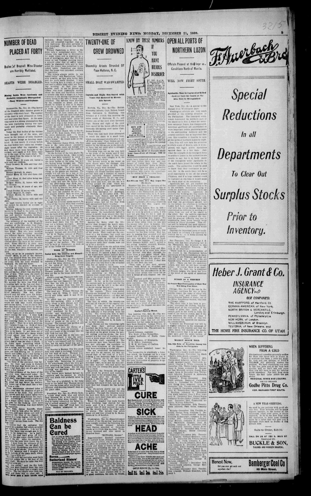

HN-320: Coal-mine death count rises at Braznell, Pennsylvania
HN-320 · December 30, 1899 · Disasters, Accidents & Emergencies > Explosions, Industrial & Workplace Disasters > Mine disasters

page image (issue PDF)Recorded finding
1899 Braznell mine explosion's early fatality estimates were greatly overstated/variable.
Discovery narrative
Source: Jasper County Democrat, p. 2 — original page.
Report: At the Braznell mine near Brownsville, Pennsylvania, the newspaper said more than 40 deaths were then known. The violent underground explosion reportedly destroyed the main shaft, hurled timbers out, and blasted a cage upward before it fell back, blocking access for rescuers. The original page notes that the scale appeared worse than first estimated.
Assessment: Early death tally, not a final list. The shaft narrative is reported testimony; the precise initiating cause remains unverified here. Follow-up open.
Curated audit flag
Class: Unverified lead (Q)
Recorded difference/concern: 1899 Braznell mine explosion's early fatality estimates were greatly overstated/variable.
Assessment: Specific side-by-side numbers still missing from original A pages.
Source links: https://newspapers.lib.utah.edu/udn_files/8d/5a/8d5ac13c343eaac8a6832568538f728e9def5ded.pdf https://historicnewspapers.sc.edu/lccn/sn84026853/1900-01-10/ed-1/seq-2/ https://www.coalmininghistorypa.org/annualreport/1899/1899%20Annual%20Report%20pdf%20from%20Univ%20of%20Scranton.pdf
Original archive images (3)
Authentic images retrieved from Utah Digital Newspapers (University of Utah), Hoosier State Chronicles (Indiana State Library) and South Carolina Historic Newspapers (University of South Carolina). Article crops are located using the archive's own OCR word coordinates and rendered at native crop resolution; article clips are assembled from the archive's own article-block images; page images marked "archive tiles" are stitched from the archive's own tiled page service at its 256-px tile cap; page images marked "issue PDF" are single pages rasterised from the archive's own issue PDF, with the page chosen by matching the headline against the PDF's text layer; page scans are reduced-size access renditions. No images were generated, mocked, or retouched.

Utah Digital Newspapers (University of Utah)
Open larger view · Archive viewer (full resolution)

Hoosier State Chronicles (Indiana State Library)
Open full-resolution clip · Archive viewer (full resolution)

South Carolina Historic Newspapers (University of South Carolina)
Open larger view · Archive viewer (full resolution)
Source acquisition
Status: Archive images acquired
Authentic archive-owned image renditions were retrieved for this record and are displayed above. The source-acquisition manifest preserves the original pre-acquisition feasibility assessment.
Original seed
URL (preserved verbatim): https://newspapers.library.in.gov/?a=d&d=JCDC18991230.2.19
Saved research report: Historical_Newspaper_Event_Research_303-327_2026-10-23.md
Evidence note: A newspaper report means a historical publication made a claim; it does not establish that claim as fact. Contemporary reporting is separated from later scholarly context and our own assessment.